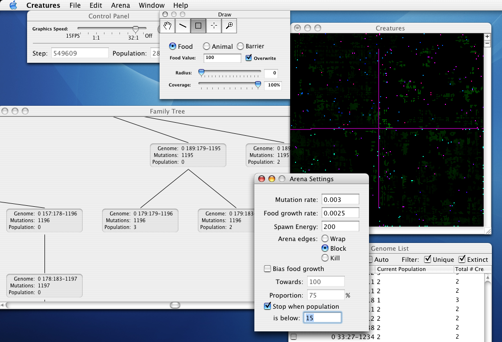

Creatures - Artificial Life
Welcome to the home of Creatures, a program for the exploration of evolution, natural selection, genetic programming, and artificial life.
Creatures 1.0 is available! Download now! (851kB .dmg)
Alternate download location.
Creatures requires Mac OS X 10.2 (Jaguar) or later.
Creatures is $15 shareware. You are free to try it for as long as you like, but you must register to activate the ability to save your worlds or create large environments. You can register on the web or directly within Creatures. You can also order by fax or by phone.
What is Creatures?
Explore life, death, and evolution in a complete artificial environment.
Creatures is an artificial life program. Animals live in Creatures' artificial world, seeking food, reproducing, and trying not to die.
Each animal is controlled by a small computer program; the animal's brain. Occasionally, an animal's program is mutated at random. Most of the time, the mutation is bad: the program stops working, and the animal dies. But sometimes, the change is useful, and the animal passes its changed program on to its children. Successful changes spread through the population, and the animals evolve.
The slow, stupid default program does well enough, until a fast eating machine evolves, eats all the food, and takes over. The resulting population explosion eats food faster than it grows back. The population starves, and a slower, less energy-intensive animal may gain the advantage.
Or create and experiment with your world in any way you choose.
More Information
For more information, you may access the User's Guide online.
Contact
For questions, comments, or support, contact Michael Ash at creatures@mikeash.com.